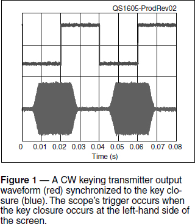
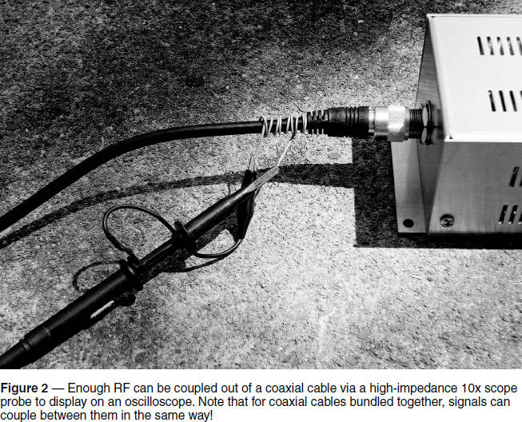
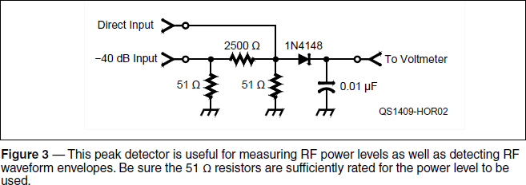

Experiment #162 — Oscilloscope Triggering and RF
As part of the lab work suggested for last month’s column1, you were asked to take a look at the rising edge of an FET gate drive pulse — a very close look! Being able to observe the subtle changes of a fast-rising pulse’s leading edge is not trivial. So this month, we’re going to review some of the “triggering” technique required to use an oscilloscope to make these and other high-speed measurements. We’ll use triggering to look at an RF waveform in a few different ways.
I assume that you have a scope of your own and can use its basic functions. If you need more background on oscilloscopes, the book Oscilloscopes for Radio Amateurs, by Paul Danzer, N1II, is a good introduction to the subject2 and there are numerous online sources of information, as well. (Note that the labeling on your scope may differ somewhat from the common terms I use in this column.)
RF and Triggering
Triggering on RF signals can be tricky, particularly if they are erratic or intermittent. The result is often a blurry trace on the display. If the RF waveform is synchronized with a cleaner control signal of some sort, it’s a lot easier to get a stable display. For example, the CW waveforms in ARRL Product Reviews (see Figure 1) are measured this way — the closure of the key contacts is used to trigger the scope, which then cleanly displays the envelope of the RF output.

You can try this yourself with a two-channel scope, a CW keyer, and a paddle. Connect one channel to your keyer output. (If the keyer is connected to the transceiver’s KEY input with a phone plug, you may be able to unscrew the plug’s shell and attach the scope probe to the exposed terminals of the connector. A splitter adaptor and a spare plug can also provide contacts to the keying input.) Connect the transceiver to a dummy load, turn down the RF power output level, and set the keyer to 30 WPM or so. Choose a quiet frequency on the 30 meter band. Assuming the transmitter is keyed when the KEY input is grounded, set the scope’s trigger controls to NORMAL mode with a negative AC slope. Send a string of dits and set the time base to show two or three dits across the screen.
Now pick up some RF with the other probe by wrapping a few turns of hookup wire around the coax feeding the dummy load, as in Figure 2. Connect the probe and its ground clip to the ends of the wire with the scope’s vertical sensitivity set to maximum. You will probably have to turn up the RF power level to pick up more than a few mV of RF. Increasing the number of turns of wire also increases the coupled RF into the probe.

Alternately, you can use a T connector at the dummy load and devise a way to connect the probe with a short coax pigtail or binding post adapter. Don’t connect the scope input directly to the dummy load with coax unless you’re sure the power level is low enough not to damage the scope input. It’s safer to use a probe.
Key the transmitter again and you should be able to obtain a display very much like the image in Figure 1. (This would be an excellent time to check the transmitter’s CW rise and fall time. Values of 4 – 6 msec are brisk enough for good keying, but not so fast that they cause key clicks on adjacent channels.)
Try moving the key closure input to the trigger system’s EXT (external) input. The triggering function should work just the same except you’ll only see one trace on the display — the RF envelope.
Zooming In
While this provides a good view of your transmitter’s keying waveform, it is not possible to see individual RF cycles or the details of how the RF output waveform begins. Switch your trigger source to the channel showing the RF waveform, set the time base to show several RF cycles on the display (100 – 500 ns/div for 30 meter signals), and experiment with the AC slope selection and sensitivity to see if you can stabilize the RF waveform on the display.
It’s likely that you’ll be able to see some RF, but not with a reliable starting point. The waveform may jump around, or you’ll see several waveforms superimposed on each other. This is because the RF waveform is unlikely to start up in exactly the same way each time the transmitter is keyed.
Another option is to generate an “RF Detected” signal of your own. You can make up a simple RF detector circuit, as shown in Figure 3. The output of this circuit follows the envelope of the RF signal. Connect the 40 dB attenuator input directly to the dummy load. You can then trigger the scope from the output of the RF detector either using the AC slope or with the DC level. This will cause the scope to trigger after a few cycles of RF have charged up the detector capacitor. (If the detector will always be used with a 50 Ω dummy load, the left-most 51 Ω resistor can be replaced by the dummy load. Permanently adding this circuit to your dummy load provides a handy peak detector output for other testing purposes.)

Delayed Sweep
If your scope has the feature, this is a great time to experiment with delayed sweep, in which the scope waits for a fixed interval after being triggered before beginning the on-screen waveform display. In Figure 1, for example, using delayed sweep would allow you to trigger on the key closure, wait, and then display the RF waveform at a very fast horizontal resolution that could show individual cycles.
With the key closure triggering the scope as before, set the delay to approximately 6 ms before showing the actual RF waveform at 100 – 500 ns/div. The waveform may still be jumpy or blurry, due to the fact that it’s unlikely that the transceiver oscillators are synchronized to the keying input.
Single-Sweep Mode
It’s a little frustrating not to be able to zero in on those startup RF cycles to see just how your transmitted signal gets going. But there is one more option available on digital scopes those of us who grew up with analog scopes really appreciate — single-sweep mode. This option is generally controlled by a knob or switch in the time base area (or menu structure) of your scope controls.
When single-sweep mode is enabled, each triggering event results in just one trace being displayed. You then have to clear or reset the display before another trace will be displayed. The short persistence (how long the trace lasts) of an analog scope makes the one trace very difficult to see at very short sweep times — such as those necessary to view one or two cycles of an RF signal. All sorts of tricks are employed: turning out all the lights in the lab, or putting your head under a hood. (Back in the day, if you were lucky, a storage scope with a very expensive — and easy to damage — display tube was used to hold the image of the waveform.) Today’s digital scopes hold the trace onscreen and even allow you to manipulate and measure the waveform on the display.
Go back to triggering the scope directly from the RF signal. Set the scope for single-sweep mode and key your transmitter. It may take a little adjustment, but you’ll soon have a nice, bright display of one or two RF cycles just as your transmitter turns on!
Practice and Learn
As long as you are experimenting with your scope, this is a great opportunity to explore some of the triggering system features and really learn how to get the most out of them. Your scope manufacturer may have an online tutorial or manual to follow as well. The scope is your eyes on the RF workbench. The better you know how to use it, the clearer you will see!
Notes
1All previous “Hands-On Radio” experiments are available to ARRL members at www.arrl.org/hands-on-radio.